Sing
唱歌是種宣洩心情的好方法，
從小到大都對音樂充滿熱情~

| 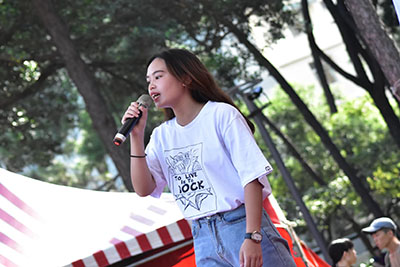 | 熱音幹部 進入大學才第一次踏入熱音社， 因為在高中時只有吉他社，所以 滿懷一股熱情，甚至之後還當上 了幹部，真心覺得很不可思議， 現在社團的定位是文書組組長， 希望能藉由當上熱音幹部學到更 多東西。 |
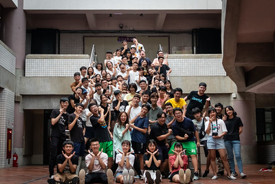 | 系學會 大一時參加了系上的迎新宿營， 事後回想起來短短的三天非常難 忘，開學之後也陸續參與了系上 活動，認識了很多朋友及學長姐 ，大二成功地進入系學會，雖然 較忙碌不過大家感情也特別好。 |
| 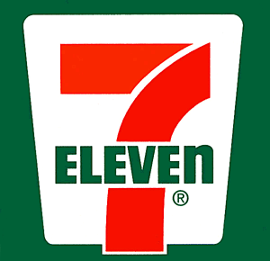 | 7-Eleven 這是我在高中時的第一份工作， 在便利商店打工實在很累，有很 多項目要記，除了POS機，還要 會盤點進貨等工作，之後因為高 三要考大學而離職，只待了大概 四個月。 |
 |
麥當勞 大學開始認為自己應該獨立，經 濟方面也不依賴家裡，所以從大 一開學前就在麥當勞打工，到目 前還是持續，麥當勞裡的同事們 感情都很親密，這也是我工作的 動力來源。 |
| 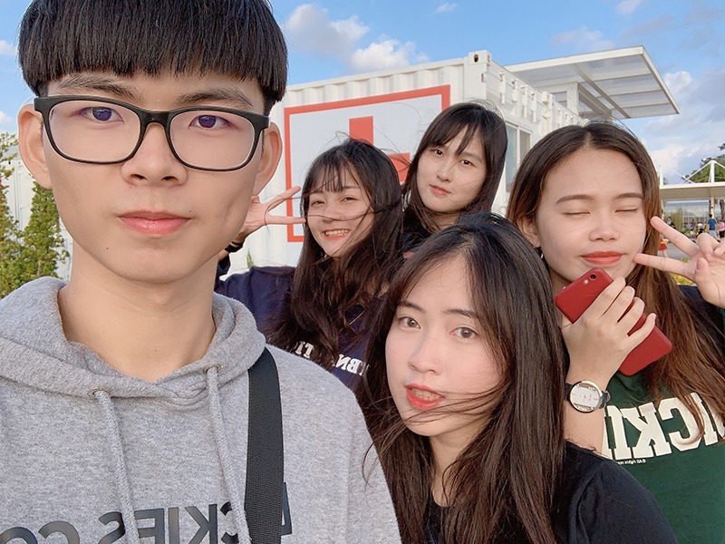 | 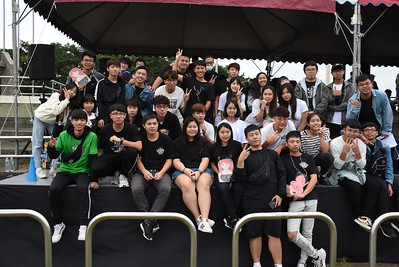 | 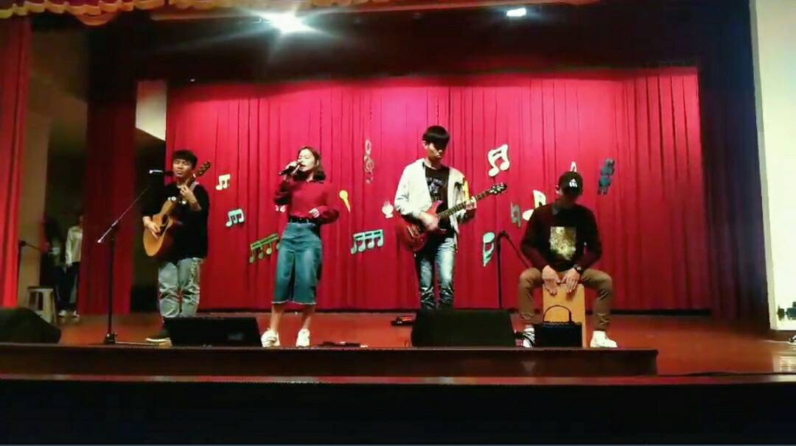 | 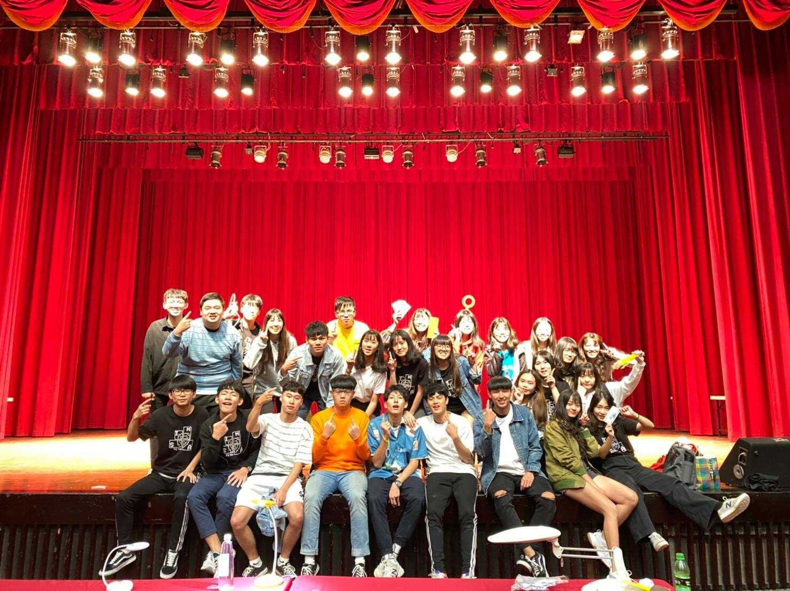 |
| 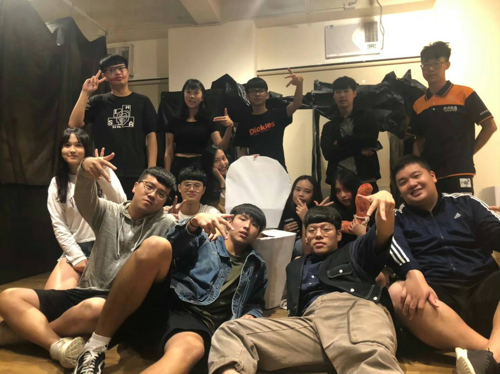 | 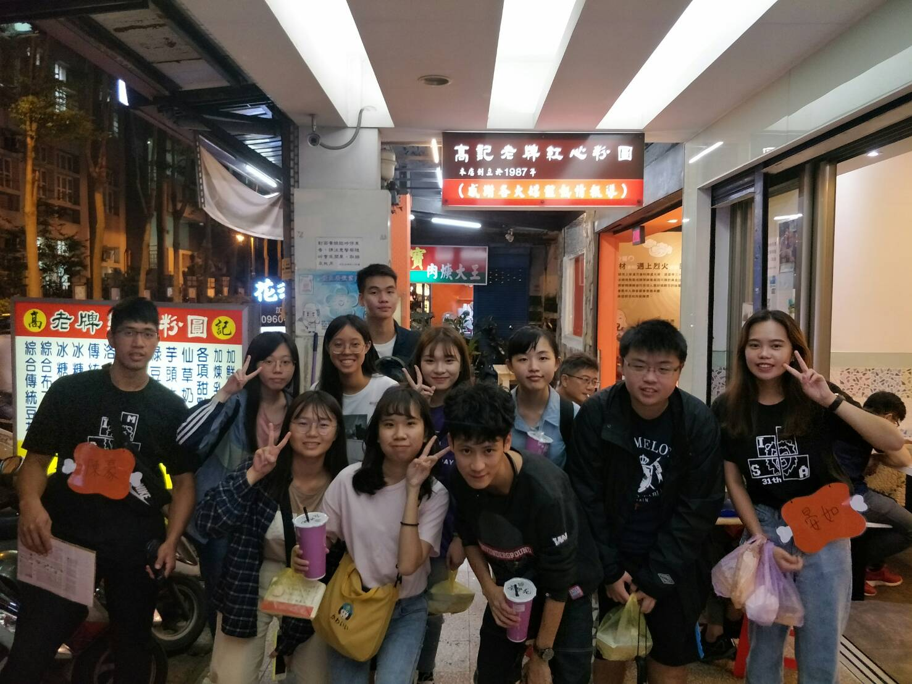 | 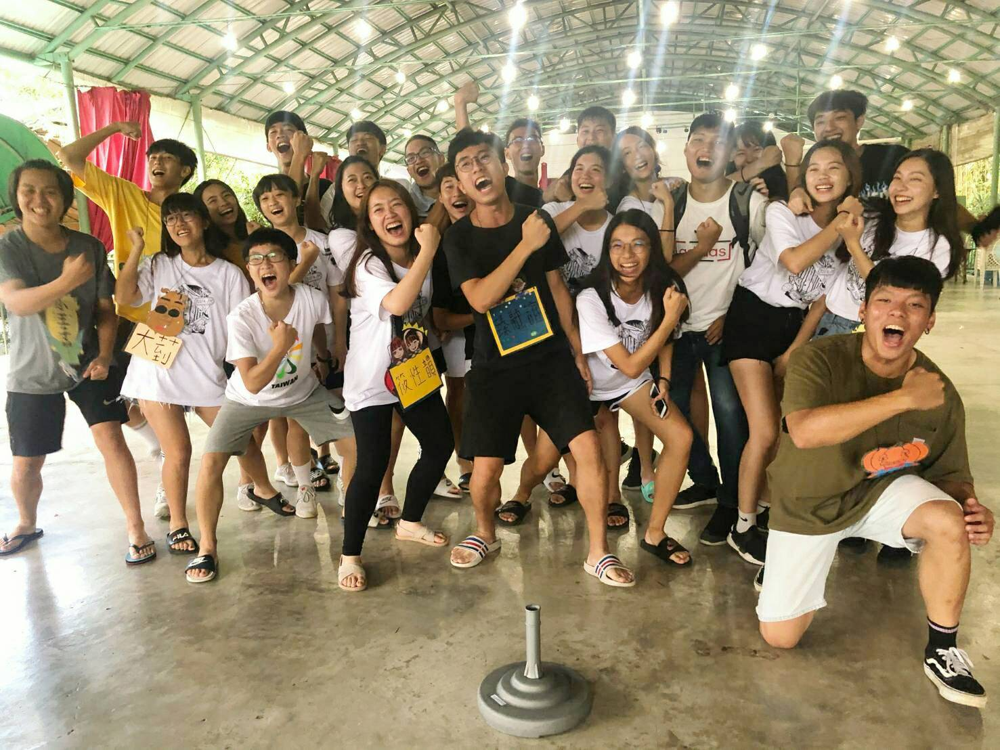 | 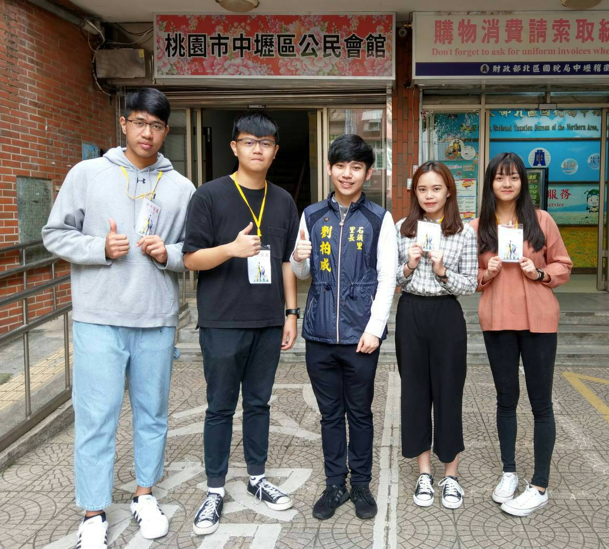 |